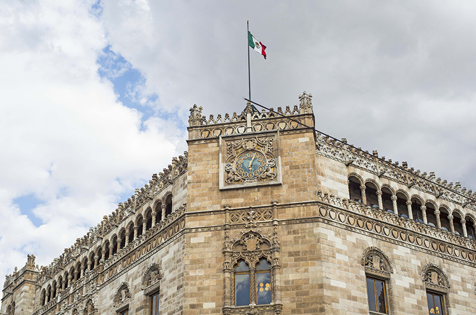

Recoridos turísticos "MICTLAN"
es una delicia visitar el Centro Histórico de la ciudad de México, que ha sido catalogada por la Revista Forbes como el Cuarto Mejor Lugar del Mundo para Comer (después de París, Roma y Tokio), pues precisamente en el corazón de la capital se concentran los restaurantes y fondas tradicionales que preparan los mejores platillos de la gastronomía mexicana y de la cocina internacional, además de cantinas, bares, taquerías, cafeterías y terrazas que son verdaderos oasis para disfrutar de un ambiente relajado y contemplar los edificios y el devenir de la gente que recorre diariamente esta zona.
